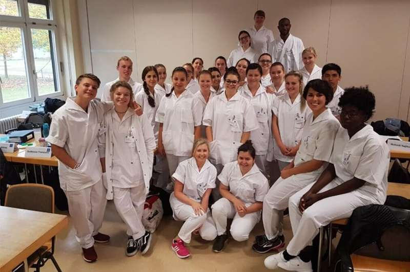
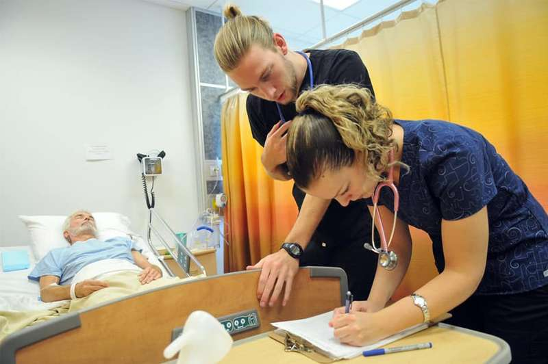
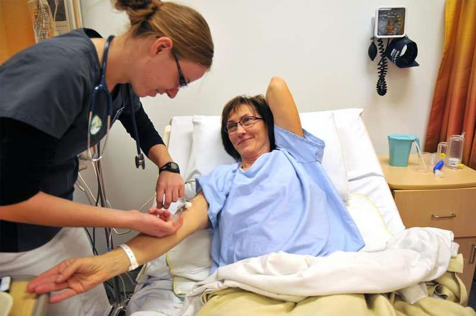

27/04/2022 1229
Bạn có muốn trở thành một điều dưỡng viên tại đất nước có nền y học và hệ thống y tế tốt nhất trên thế giới? Ngoài nền y học phát triển, Đức còn là một trong những nền kinh tế mạnh nhất trên thế giới. Vì vậy, bạn có thể chắc chắn rằng công việc của bạn tại đây sẽ không bao giờ bị trả lương thấp.
Điều dưỡng viên là một trong những nghề khá phổ biến ở Đức và được sự quan tâm ngày càng tăng với mức lương và điều kiện cho nhân viên làm việc. Tất cả mọi người muốn trở thành một điều dưỡng viên hành nghề sẽ cần phải có bằng cấp tương ứng cho công việc đòi hỏi chuyên môn cao này
Trong bài đăng này, chúng ta sẽ tóm tắt những thông tin liên quan nhất về cách trở thành điều dưỡng viên ở Đức và những yêu cầu quan trọng hơn bạn sẽ cần phải đáp ứng.
Tổng quan
Trở thành điều dưỡng viên nhiều khi như là một định mệnh đối với nhiều người ở Đức, bất chấp giới tính của họ. Tuy nhiên, nhiều người có cảm nhận thiếu thực tế về công việc điều dưỡng viên và coi nhẹ sự thật rằng công việc này thường căng thẳng và đòi hỏi trình độ cao.
Nếu bạn quan tâm đến việc trở thành một điều dưỡng viên và điều kiện đáp ứng các yêu cầu cho việc này, bạn sẽ phải biết tất cả các nhiệm vụ của mình. Các nhiệm vụ chính là:
- Đồng hành và chăm sóc bệnh nhân
- Điều trị cho người già, bệnh nhân theo hướng dẫn của bác sĩ
- Lập kế hoạch các biện pháp chăm sóc, thông báo và ghi lại chúng
- Đóng vai trò là người liên lạc cho người thân, bác sĩ và nhà trị liệu
Trách nhiệm của điều dưỡng viên bao gồm chăm sóc những người bệnh ở mọi lứa tuổi mắc bệnh về thể chất cũng như tinh thần, những người có nhu cầu đặc biệt hoặc những người bệnh nặng. Ngoài ra, điều dưỡng viên còn cung cấp các lời khuyên về phòng ngừa, nâng cao sức khỏe cho những người được chăm sóc.
Bên cạnh những nhiệm vụ chung, bạn sẽ phải ghi lại chính xác mọi thứ xảy ra trong quá trình làm việc trên máy tính - Công việc máy tính thường mất đến ba giờ trong một ngày làm việc. Do đó, điều này làm giảm thời gian tiếp xúc trực tiếp với bệnh nhân.
Trong quá trình học tập điều dưỡng tại trường, việc thực hành tại viện và hoàn thành kỳ thực tập thật tốt là việc cần thiết phải làm. Nó đem lại thu nhập cho bạn kể cả khi bạn còn đi học, ngoài ra nó còn cho các điều dưỡng viên tương lai thấy được bức tranh toàn cảnh về công việc.
Nên học đại học hay học nghề điều dưỡng viên tại Đức ?
Có hai cách chính để trở thành điều dưỡng viên ở Đức:
1. Học bằng đại học ( 3 năm )
2. Học đào tạo nghề (3 năm )
Hiện nay các bạn học viên tại Việt Nam thường sẽ chọn chương trình học đào tạo nghề vì những ưu điểm riêng của nó. Bạn có thể tham khảo chương trình của Lotus Quảng Bình tại đây
Chúng ta sẽ cùng tìm hiểu những điểm khác biệt chính, yêu cầu, ưu điểm và nhược điểm của hai chương trình này như sau :
1. Học đại học chuyên ngành điều dưỡng viên tại Đức
Ở nhiều quốc gia khác, hoàn thành bằng Đại học là một cách cổ điển để trở thành y tá. Tuy nhiên, ở Đức việc đào tạo điều dưỡng viên chỉ bắt đầu trong 10 năm trở lại đây, các chương trình cấp bằng điều dưỡng mới bắt đầu xuất hiện ở nhiều trường đại học trên cả nước.
Thông thường, các trường đào tạo điều dưỡng viên sẽ kết hợp với các bệnh viện hoặc phòng khám, vì vậy sinh viên vừa học vừa làm.
Chương trình kéo dài trong 3 hoặc 4 năm và sinh viên tốt nghiệp sẽ hoàn thành bằng Cử nhân khoa học Y tế + bằng cấp chuyên môn về y tế và điều dưỡng hoặc Cử nhân Khoa học về Điều dưỡng + Văn bằng Y tế và điều dưỡng.

Mặc dù cả bằng Cử nhân và đào tạo nghề điều dưỡng đều cho phép bạn làm việc như một y tá, nhưng bằng Đại học tất nhiên sẽ mang lại nhiều cơ hội hơn cho sự nghiệp trong tương lai.
Và quan trọng nhất là sinh viên tốt nghiệp đại học sẽ thăng tiến trong sự nghiệp nhanh hơn so với việc đào tạo nghề y tá. Người học nghề sẽ thường sẽ cần một lượng kinh nghiệm đáng kể để có thể tiến lên. Nhưng với những điều dưỡng viên nước ngoài nên chọn chương trình du học nghề y tá, vì nó đòi hỏi lượng kiến thức và tiếng Đức thấp hơn so với việc học Đại học.
Sinh viên tốt nghiệp đại học có thể đảm nhận nhiều công việc có trách nhiệm hơn và cũng có nhiều công việc hành chính hơn, vì vậy họ thậm chí không nhất thiết phải làm y tá thực hành.
Con đường phổ biến nhất là sau khi kết thúc chương trình học là họ trở thành giáo viên y tá tại các trường dạy nghề. Nhưng nhiều người cũng kết hợp công việc y tá của họ tại bệnh viện với nghề dạy học.
Họ cũng có thể học lên cao hơn như tham gia chương trình đào tạo Thạc sĩ khác nhau để nâng cao kiến thức và sự nghiệp của họ.
Một sinh viên điều dưỡng đủ điều kiện bằng tiếng Đức hiện nay gần như được đảm bảo có một vị trí việc làm sau khi họ đăng ký tham gia chương trình
Vậy bạn sẽ học gì ở đại học ?
Các khóa học tại trường đại học được điều chỉnh theo Tiêu chuẩn quốc tế và không chỉ bao gồm các khía cạnh điều dưỡng mà còn cả Tâm lý học, Khoa học sức khỏe, Khoa học xã hội và con người, sự hiểu biết toàn diện về sức khỏe và bệnh tật.
Để có thể giao tiếp với bệnh nhân theo cách tốt nhất có thể, các sinh viên được học kỹ thuật tư vấn, hướng dẫn trò chuyện… kể cả các môn học như luật pháp và đạo đức.
Bởi vì mục đích cuối cùng của bằng cấp là phải mang lại cho bạn tất cả những gì mà điều dưỡng viên cần để chăm sóc và điều trị người bệnh một cách tối ưu, việc đào tạo cần toàn diện để chuẩn bị cho những vị trí công việc cao hơn với nhiều trách nhiệm hơn.
Khóa học Đại học bao gồm tất cả các kỹ năng được giảng dạy trong chương trình đào tạo nghề và cũng tính đến các nhu cầu ngày càng phức tạp của những người cần được chăm sóc.
Các môn học tại Đại học bao gồm một số môn học như sau:
- Khái niệm cơ bản về y tế
- Kiến thức cơ bản về điều dưỡng
- Các lý thuyết và khái niệm trong chăm sóc chuyên nghiệp
- Nghề nghiệp, luật pháp và kinh tế
- Khoa học
- Kỹ năng giao tiếp xã hội và năng lực bản thân
- Bệnh lý và chẩn đoán
- Khoa học sức khỏe
- Chăm sóc sức khỏe và điều dưỡng đặc biệt
Ngoài các khóa học tại trường Đại học, phần thực hành của chương trình học được chú trọng. Độ dài tùy thuộc vào các trường Đại học, trung bình khoảng một nửa chương trình học sẽ được dành riêng cho trải nghiệm thực tế. Đây là cách hoàn hảo để sinh viên có được cái nhìn sâu sắc về cuộc sống lao động, triển khai kiến thức và đạt được trình độ và năng lực.
Mọi người đều phải hoàn thành phần lý thuyết và thực hành để được tốt nghiệp Đại học.
Trong phần thực hành, sinh viên trải qua các lĩnh vực điều dưỡng cơ bản như chăm sóc dài hạn, chăm sóc cấp tính, hoặc chăm sóc di động. Nhìn chung, họ hoàn thành các khóa thực tập trong tất cả các lĩnh vực chăm sóc. Ví dụ như trong bệnh viện, trung tâm phục hồi chức năng, điều dưỡng tại nhà, hoặc tại các nhà chăm sóc dài hạn.
2. Học nghề điều dưỡng tại Đức
Học nghề điều dưỡng là gì ?
Đào tạo nghề còn được gọi là chương trình Học nghề Y tá, đây là một cách rất phổ biến để trở thành điều dưỡng viên ở Đức. Chương trình được thực hiện cho những người quan tâm đến việc theo đuổi sự nghiệp y tá ở Đức nhưng không có trình độ học vấn bắt buộc. Học nghề điều dưỡng được nhiều học viên nước ngoài theo học như hiện tại ở Việt Nam.
Về cơ bản, việc đào tạo tập trung tại một trường đào tạo điều dưỡng được sự công nhận cấp phép của nhà nước. Nó thường kéo dài trong 3 năm và kết thúc bằng kỳ thi cấp Bang.
Sau khi vượt qua kỳ thi thành công, sinh viên đủ tiêu chuẩn trở thành Y tá và sẽ được ngay lập tức bắt đầu làm việc theo đúng chuyên môn

Việc đào tạo y tá được tổ chức tại các trường học kết hợp với việc thực hành tại cơ sở bệnh viện thực tế. Việc trải nghiệm thực tế là việc bắt buộc, họ sẽ được chi trả lương trong những giờ thực hành, vì vậy việc đi học dường như không mất tiền mà họ còn dư ra được một khoản tiền tiết kiệm. Sinh viên sẽ được nhận lương hàng tháng, mức lương tùy thuộc vào đơn vị tiếp nhận và năm theo học. Trong ba năm đào tạo phải đầu tư 2.100 giờ lý thuyết và 2.500 giờ thực hành.
Nội dung của khóa đào tạo được tổ chức chặt chẽ và có cấu trúc rõ ràng, nó không chỉ bao gồm các khóa học về chăm sóc sức khỏe và điều dưỡng mà còn liên quan đến các kiến thức cơ bản về khoa học y tế, sự phát triển của điều dưỡng, tất cả những kiến thức liên quan từ xã hội và nhân văn khoa học.
Các bài học thực hành tại trường bao gồm một số môn học sau:
- Chăm sóc cơ thể
- Phòng ngừa và chăm sóc vết loét do tì đè
- Chăm sóc vết thương chung
- Quản lý thuốc
Là một phần của quá trình thực tập, sinh viên sẽ cần phải làm việc trong tất cả các phòng ban:
- Ca phẫu thuật
- Chỉnh hình
- Nội tổng quát
- Lão khoa
- Sản khoa (bác sĩ phụ nữ)
- Thần kinh học
- Khoa nhi
- Tâm thần
- Chăm sóc sản phụ và trẻ sơ sinh
- Chăm sóc cấp cứu
Vì vậy sau khi hoàn thành đào tạo nghề, họ có thể trở thành các bác sĩ chuyên khoa đa khoa và có thể làm việc trong tất cả các lĩnh vực chăm sóc y tế.
Điều dưỡng viên có nhu cầu cao ở các nước phát triển và được coi là một trong những công việc có thu nhập cao hiện nay. Nước Đức đã mở cửa cho các ứng viên không thuộc Châu Âu từ lâu, vì vậy chương trình này rất phù hợp cho các sinh viên nước ngoài muốn theo học và định cư lâu dài ở Đức
Những lợi thế của việc theo học Đại học hoặc trường dạy nghề và trở thành y tá ở Đức là:
Độc lập tài chính - Các cá nhân không phải phụ thuộc vào cha mẹ về chi phí sinh hoạt hoặc giáo dục của họ. Họ thừa kiếm đủ để nuôi sống bản thân và còn dư ra một khoản tiết kiệm
Cơ hội nghề nghiệp - Một cách dễ dàng để làm việc ngay sau khi hoàn thành khóa đào tạo hoặc đại học.
Đào tạo Thực hành và Lý thuyết - Cả hai chương trình đều bao gồm các phần thực hành và lý thuyết, giúp y tá hiểu biết rộng hơn về vai trò và giúp phát triển nghề nghiệp của họ.
Nhưng cũng có một số nhược điểm:
Cường độ cao – Quá trình đào tạo và thực hành khá nhiều
Làm việc chăm chỉ – Đặc biệt là trong thời gian thực tập, những công việc khó khăn do chưa quen, dù không đủ năng lực những vẫn được giao các nhiệm vụ mang tính chuyên nghiệp từ các bác sĩ để sinh viên làm quen nhanh với công việc.
Giờ làm việc theo ca – Ngay cả trong thời gian thực tập, bạn sẽ phải làm việc theo ca . Tuy nhiên, dù làm ca nhưng rất ít khi phải làm ca đêm
Ngoại ngữ : Tiếng Đức là ngôn ngữ không phải dễ, đây cũng là rào cản với sinh viên nước ngoài
Yêu cầu điều dưỡng tại Đức với sinh viên Việt Nam
- Tuổi: 18 - 35
- Giới tính : Cả nam và nữ
- Chiều cao, cân nặng: Không yêu cầu
- Trình độ văn hóa: Tốt nghiệp cấp 3 trở lên
- Sức khỏe tốt, không mắc các bệnh mãn tính, truyền nhiễm như: viêm gan A, B, C, giang mai, lao phổi…
- Không tiền án, tiền sự.
- Ưu tiên những bạn đã có kinh nghiệm làm điều dưỡng và có bằng cấp liên quan đến điều dưỡng ( Không có sẽ được đào tạo tại Việt Nam )
- Trình độ tiếng Đức A1 trở lên ( Với học viên chưa biết tiếng sẽ được đào tạo tiếng Đức sau khi trúng tuyển tại Việt Nam )
- Sức khỏe thể chất và tinh thần tốt
- Đáng tin cậy và có trách nhiệm
Bất kể bạn muốn học tại một trường đại học hay trường dạy nghề, ứng viên cần phải mang một số kỹ năng chính cho công việc. Họ cần siêng năng, trách nhiệm, tinh thần và thể chất tốt để có thể đáp ứng nhiều nhiệm vụ mà họ sẽ phải đối mặt.
Để ứng tuyển vào trường dạy nghề, bạn sẽ cần đến các bệnh viện vì họ thường đăng quảng cáo tuyển dụng và tuyển dụng cho vị trí này. Mỗi bệnh viện như vậy có một trường dạy nghề, nơi bạn sẽ học lý thuyết. Vì vậy, sau khi đến Đức bạn sẽ được làm việc tại bệnh viện này và các đối tác của họ trong suốt phần thực hành.
Thực tế các học viên Việt Nam không thể tự mình đăng ký khóa học như vậy, vì vậy các Công ty ở Việt Nam sẽ liên kết với các Bệnh viện ở Đức và họ sẽ hoàn thiện về thủ tục và đào tạo cho các sinh viên có nhu cầu sang Đức để học tập và làm việc.
Cơ hội nghề nghiệp nào cho bạn với tư cách là một điều dưỡng viên đủ điều kiện
Vì ngành y học của Đức rất đa dạng và chuyên biệt, điều dưỡng cũng vậy, nó có nhiều chuyên khoa được phân ra riêng biệt. Hầu hết các y tá sẽ chọn một hướng và làm việc ở đó cả đời.
Nói chung, có các chuyên ngành sau để bạn lựa chọn:
1. Y tá thường trực : y tá đa khoa làm việc ở nhiều khoa khác nhau, thường xuyên có mặt tại bệnh viện
2. Lão khoa ( Y tá lão khoa ) : chăm sóc người già và người cao tuổi. Họ có thể hoàn thành khóa đào tạo đặc biệt giúp họ hiểu rõ hơn về nhu cầu đặc biệt của nhiều người cao tuổi.
3. Nhi khoa ( Y tá trẻ em) : chăm sóc cho trẻ em bị bệnh, bị thương hoặc tàn tật và những người trẻ tuổi nhưng cũng có thể là trẻ sơ sinh.

Thông thường khi đăng ký học đại học hoặc học nghề, bạn đã có thể chọn hướng đi cho mình. Trong quá trình học nghề, bạn cũng có thể quyết định ở năm đào tạo thứ 3, vì thông thường 2 năm đầu sẽ cung cấp cho bạn những kiến thức tổng quát.
Ngoài trình độ học vấn 3 năm tiêu chuẩn, y tá có thể tham gia các khóa học bổ sung để chuyên sâu về các lĩnh vực sau:
- Gây mê và chăm sóc đặc biệt
- Dịch vụ nội soi
- Ung thư
- Lão khoa lâm sàng
- Phục hồi chức năng và chăm sóc lâu dài
- Chăm sóc giảm nhẹ và chăm sóc cuối cùng
- Vệ sinh
- Thận học
- Chăm sóc sức khỏe tâm thần
Các nhà tuyển dụng tiềm năng là các bệnh viện và viện dưỡng lão. Một số nơi phổ biến để làm điều dưỡng viên sau khi tốt nghiệp như:
- Trung tâm Sức khỏe
- Nhà người già cần chăm sóc hoặc viện dưỡng lão
- Ký túc xá cho người khuyết tật
- Dịch vụ xã hội ngoại trú
- Các công ty bảo hiểm
Điều dưỡng viên kiếm được bao nhiêu tiền ở Đức ?
Khi bắt đầu sang Đức, lương thực nhận là từ 1.000 - 1.200 EUR trong quá trình đào tạo nghề và 2.500 EUR trở lên khi làm điều dưỡng viên đủ điều kiện toàn thời gian.
Nguồn tốt nhất và đáng tin cậy để kiểm tra mức lương của một nghề cụ thể ở Đức là Gehalt.de .
Công cụ này cũng cho phép so sánh mức lương của bạn với các y tá khác ở các khoa / bệnh viện khác nhau.
Con số chính xác về mức lương trong quá trình đào tạo nghề như sau: năm đầu tiên bạn sẽ kiếm được khoảng 1.100 EUR/tháng, năm thứ 2 khoảng 1.200 EUR/tháng và năm thứ 3 khoảng 1.300 EUR/tháng.
Số tiền nhận về sẽ khác nhau tùy vào khu vực làm việc, các tiểu bang. Hãy lưu ý rằng đó là mức lương tổng và chưa trừ thuế, sau khi trừ nó sẽ ít hơn khoảng 200-300 EUR.
Vậy các bạn đã biết làm thế nào để trở thành một điều dưỡng viên tại Đức chưa nào? Hãy liên hệ với chúng tôi để trở thành một điều dưỡng viên tại Đức ngay TẠI ĐÂY
► Tổng hợp các đơn hàng XKLĐ Nhật Bản
► Tổng hợp các đơn hàng XKLĐ Đài Loan
► Tổng hợp các đơn hàng XKLĐ Châu Âu